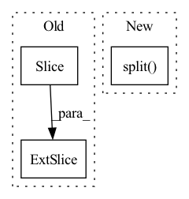

Pattern ID :3064

Before Change
def forward(self, input):
n_units = self.n_units
real, imag = input[:,:n_units//2], input[:,n_units//2:]
magnitude = torch.sqrt(real**2 + imag**2)
output_magnitude = magnitude + self.bias
ratio = output_magnitude / (magnitude + self.eps)
After Change
def forward(self, input):
n_units = self.n_units
real, imag = torch.split(input, [n_units // 2, n_units // 2], dim=1)
magnitude = torch.sqrt(real**2 + imag**2)
output_magnitude = magnitude + self.bias
ratio = output_magnitude / (magnitude + self.eps)
ratio = torch.where(output_magnitude >= 0, ratio, torch.zeros_like(magnitude))
In pattern: SUPERPATTERN
Frequency: 3
Non-data size: 3
Instances
Fragment ID: 16451881
Project Name: tky823/dnn-based_source_separation
Commit Name: cfba8237e0e4c034cf34bf507819bbfccb33b7cd
Time: 2021-09-23
Author: 40362510+tky823@users.noreply.github.com
File Name: src/activation.py
M Class Name: ModReLU1d
N Class Name: ModReLU1d
M Method Name: forward(2)
N Method Name: forward(2)
M Parent Class: nn.Module
N Parent Class: nn.Module
M File Name: src/activation.py
N File Name: src/activation.py
M Start Line: 20
M End Line: 22
N Start Line: 31
N End Line: 33
'>
Before Change
def forward(self, input):
n_units = input.size(1)
real, imag = input[:,:n_units//2], input[:,n_units//2:]
condition = torch.logical_and(real > 0, imag > 0)
output_real = torch.where(condition, real, torch.zeros_like(real))
After Change
def forward(self, input):
n_units = input.size(1)
real, imag = torch.split(input, [n_units // 2, n_units // 2], dim=1)
condition = torch.logical_and(real > 0, imag > 0)
output_real = torch.where(condition, real, torch.zeros_like(real))
output_imag = torch.where(condition, imag, torch.zeros_like(imag))
'>
Fragment ID: 16451880
Project Name: tky823/dnn-based_source_separation
Commit Name: cfba8237e0e4c034cf34bf507819bbfccb33b7cd
Time: 2021-09-23
Author: 40362510+tky823@users.noreply.github.com
File Name: src/activation.py
M Class Name: ZReLU1d
N Class Name: ZReLU1d
M Method Name: forward(2)
N Method Name: forward(2)
M Parent Class: nn.Module
N Parent Class: nn.Module
M File Name: src/activation.py
N File Name: src/activation.py
M Start Line: 69
M End Line: 70
N Start Line: 80
N End Line: 82
'>
Before Change
self.grid[i], self.anchor_grid[i] = self._make_grid(nx, ny, i)
y = x[i].clone()
y[..., :5 + self.nc].sigmoid_()
if self.inplace:
y[..., 0:2] = (y[..., 0:2] * 2 + self.grid[i]) * self.stride[i] // xy
y[..., 2:4] = (y[..., 2:4] * 2) ** 2 * self.anchor_grid[i] // wh
After Change
wh = (wh.sigmoid() * 2) ** 2 * self.anchor_grid[i] // wh
y = torch.cat((xy, wh, conf.sigmoid(), mask), 4)
else: // Detect (boxes only)
xy, wh, conf = x[i].sigmoid().split((2, 2, self.nc + 1), 4)
xy = (xy * 2 + self.grid[i]) * self.stride[i] // xy
wh = (wh * 2) ** 2 * self.anchor_grid[i] // wh
y = torch.cat((xy, wh, conf), 4)
z.append(y.view(bs, self.na * nx * ny, self.no))
'>
Fragment ID: 16451877
Project Name: ultralytics/yolov5
Commit Name: 060837406542c5c65301b8fde641f4d92a1f395e
Time: 2022-09-17
Author: glenn.jocher@ultralytics.com
File Name: models/yolo.py
M Class Name: Detect
N Class Name: Detect
M Method Name: forward(2)
N Method Name: forward(2)
M Parent Class: nn.Module
N Parent Class: nn.Module
M File Name: models/yolo.py
N File Name: models/yolo.py
M Start Line: 61
M End Line: 77
N Start Line: 58
N End Line: 77